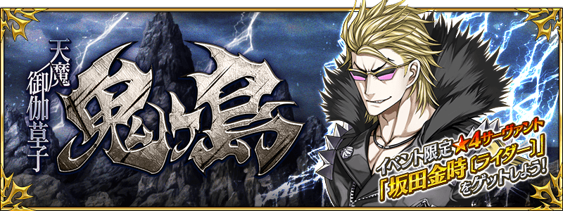

◆活動舉辦時間◆
2016年7月上旬～中旬預定
◆活動概要◆
舉辦期間限定活動「天魔御伽草子 鬼島」！
「★4(SR)坂田金時〔Rider〕」做為活動限定報酬Servant登場！
推進活動，入手坂田金時〔Rider〕吧！
◆活動參加條件◆
只有通過「特異點F 炎上汙染都市 冬木」的Master才能參加

◆先行情報！在活動活躍的Servant◆
在「天魔御伽草子 鬼島」的活動關卡中，賦予特定的Servant讓活動攻略更有利的效果。
強化對象Servant挑戰活動吧！
【對象Servant】
天草四郎、Emiya（Archer）、Emiya〔Assassin〕、牛若丸、沖田總司、織田信長、清姬、坂田金時（Berserker）、佐佐木小次郎、酒呑童子、玉藻前、武藏坊弁慶、兩儀式（Assassin）、兩儀式（Saber）